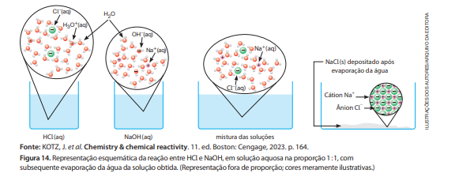
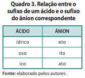
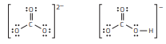

6.Neutralização ácido-base e sais
Imagine que uma solução aquosa de HCl seja misturada a outra, de NaOH. Quando as duas soluções
são misturadas, ocorre uma reação química de neutralização ácido‑base. Uma maneira de representá
‑la é
por meio da seguinte equação química:
HCl (aq) + NaOH (aq) → NaCl (aq) + HOH (l)
É relevante compreender bem essa representação. Os reagentes HCl e NaOH e o produto NaCl estão dissociados em íons. Os íons Na+ (aq), presentes no início, continuam a existir no final. O mesmo acontece com os íons Cl – (aq). A reação é entre H+ e OH– e produz água, didaticamente representada por HOH. Como os íons Na+ (aq) e Cl – (aq) não participaram da reação, podemos eliminá ‑los da equação química:
HCl (aq) ㅤㅤㅤ+ ㅤㅤㅤNaOH (aq)ㅤㅤㅤ → ㅤㅤㅤNaCl (aq) ㅤㅤㅤ+ HOH (l)
H + (aq) + Cl –
(aq) +
Na +
(aq) + OH–
(aq) →
Na +
(aq) + Cl –
(aq) +HOH (l)
Assim, outra representação da neutralização é a seguinte: H+ (aq) + OH– (aq) → H2O (l)
Considerando que os íons H+
(aq), que não têm existência individualizada em meio aquoso,
encontram ‑se, de fato, como H3O+
(aq), temos, finalmente:
H3O+
(aq) + OH–
(aq) → 2 H2O (l)
Vejamos outros exemplos:
1 H2SO4 (aq) ㅤ+ ㅤ2 NaOH (aq) ㅤㅤ→ㅤ 1 Na2SO4 (aq) ㅤ+ㅤ 2HOH (l)
2 HNO3 (aq) ㅤ+ ㅤ1 Ca(OH)2 (aq) ㅤㅤ→ㅤ 1 Ca(NO3)2 (aq) ㅤ+ㅤ 2HOH (l)
1 H3PO4 (aq) ㅤ+ ㅤ3 KOH (aq) ㅤㅤ→ ㅤ1 K3PO4 (aq) ㅤ+ㅤ 3 HOH (l)
Assim como no exemplo da reação entre HCl e NaOH, apresentado anteriormente, essas três equa‑
ções químicas podem estar relacionadas a processos em que as quantidades de H+ e OH− se equivalem.
Dizemos que esses processos são exemplos de neutralização total, ou seja, reações entre ácido e
base em
que todos os íons H+ provenientes do ácido e todos os íons OH− provenientes da base formaram água
(HOH). Nos três exemplos, há íons que, de fato, não participam da reação. (Você consegue identificá
‑los?)
Eliminando ‑os da representação, as equações passam a ser:
H+
(aq) + OH−
(aq) → H2O (l)
Essa última é mais bem representada por:
H3O+
(aq) + OH−
(aq) → 2 H2O (l)
Após uma neutralização total, se a solução aquosa em que há íons dissociados (cátions da base e ânions do ácido) for submetida a condições que propiciem a evaporação completa da água, verifica ‑se que um sólido iônico se depositará no fundo do recipiente (Fig. 14), uma vez que ele não tende a evaporar com a água. (A baixa volatilidade desse composto se relaciona ao fato de sua temperatura de ebulição, ao nível do mar, ser muito superior à da água.) Trata ‑se de um sal, composto iônico em cuja composição há cátions e ânions.

Nos exemplos comentados anteriormente, os sais que se depositariam após a evaporação da água têm fórmulas NaCl, Na2SO4, Ca(NO3)2 e K3PO4. A composição deles está indicada a seguir. Pode‑se notar que a proporção entre cátions e ânions, expressa pelos seus índices, está vinculada ao fato de a carga elétrica total do composto ser nula.
(Na +)1 ( Cl–)1 ㅤㅤ ( Na + )2 (SO4 2– )1ㅤㅤ ( Ca 2+ )1 ( NO3 – )2ㅤㅤ ( K + )3 (PO4 3– )1
cloreto de sódioㅤㅤㅤ sulfato de sódioㅤㅤㅤㅤ nitrato de cálcioㅤㅤㅤㅤ fosfato de potássioㅤㅤ

No nome de sais, como cloreto de sódio (NaCl), sulfato de sódio (Na2SO4), nitrato de cálcio (Ca(NO3)2) e fosfato de potássio (K3PO4), há o nome do cátion (reveja o Quadro 2) e o nome do ânion que o consti‑ tuem. O nome do ânion pode ser obtido do nome do ácido de que se origina, por substituição do sufixo (parte final do nome) de acordo com o Quadro 3.
Veja a seguir alguns exemplos da relação entre nomes de ácidos e de ânions.
HCl ácido clorídrico corresponde a Cl
− ânion cloreto
H2S ácido sulfídrico corresponde a S2− ânion sulfeto
HNO2 ácido nitroso corresponde a NO2
− ânion nitrito
HNO3 ácido nítrico corresponde a NO3
− ânion nitrato
H2SO3 ácido sulfuroso corresponde a SO3
2− ânion sulfito
H2SO4 ácido sulfúrico corresponde a SO4
2− ânion sulfato
H3PO4 ácido fosfórico corresponde a PO4
3− ânion fosfato
HClO ácido hipocloroso corresponde a ClO− ânion hipoclorito
HClO2 ácido cloroso corresponde a ClO2
− ânion clorito
HClO3 ácido clórico corresponde a ClO3
− ânion clorato
HClO2 ácido perclórico corresponde a ClO4
− ânion perclorato
Perceba que prefixos (como “hipo” e “per”) existentes no nome do ácido são mantidos no nome do ânion. Note, também, que a carga do ânion depende de quantos hidrogênios do ácido foram ionizados.
Veja, a seguir, exemplos de nomes e fórmulas de sais. Os índices em laranja indicam a proporção entre as quantidades de cátions e de ânions que resultam em carga elétrica total nula.
(Ca 2+ )1 ( Cl – )2ㅤㅤ ( Fe 3+ )2 ( S 2– )3ㅤㅤ ( Al 3+ )2 (SO4 2– )3ㅤㅤ ( Cu 2+ )1 (SO4 2– )1
cloreto de sódioㅤㅤ ㅤsulfeto de ferro(III)ㅤㅤㅤ sulfato de alumínio ㅤㅤsulfato de cobre(II)
CaCl2 ㅤㅤ
ㅤㅤㅤㅤㅤㅤFe 2S 3ㅤㅤㅤㅤㅤㅤㅤ Al2(SO 4) 3 ㅤㅤㅤㅤㅤㅤㅤㅤCuSO 4
( NH4 + )1 ( Cl – )1ㅤㅤ ( NH4 + )2 (SO 4 2– )1ㅤㅤ ( Fe 2+ )1 (NO3 – )2ㅤㅤ ( Ca 2+ )1 (CO3 2– )1
cloreto de amônio ㅤㅤㅤㅤsulfato de amônio ㅤㅤㅤnitrato de ferro(II)ㅤㅤㅤ carbonato de cálcio
NH 4Cl ㅤㅤㅤㅤㅤㅤㅤㅤㅤㅤ(NH 4) 2SO 4 ㅤㅤㅤㅤㅤFe(NO 3) 2 ㅤㅤㅤㅤㅤㅤㅤCaCO 3
O último dos exemplos envolve um ânion relevante, o carbonato, CO 3 2– , que não está associado a um ácido de Arrhenius. (Até hoje não foram bem ‑sucedidas as tentativas experimentais de isolar, em condições ambientes de temperatura e pressão (25 °C e 1 atm), esse suposto ácido.) É conveniente associar esse ânion ao dióxido de carbono (CO2), que, como veremos mais à frente, reage com água, deixando o meio ácido.
Existem sais cujos ânions provêm da ionização parcial de ácidos. Como exemplos, podemos citar HSO 4 – (ânion hidrogenossulfato, ou bissulfato), HSO 3 – (ânion hidrogenossulfito, ou bissulfito), HS– (ânion hidrogenossulfeto, ou bissulfeto). E existe um ânion desse tipo correspondente ao dióxido de carbono, o HCO 3 – , ânion hidrogenocarbonato (ou bicarbonato).
Entre outras ocorrências, sais estão presentes na água do mar, nos líquidos corporais dos seres vivos e em diversos minerais. Entre os sais dissolvidos na água do mar estão, em ordem decrescente de abun‑ dância, NaCl, MgCl2, MgSO4, CaSO4, KCl, CaCO3 e KBr. Desses sais, o NaCl é o de maior valor comercial. Ele é obtido em salinas, por evaporação da água (Fig. 15.A). Além de ser utilizado na culinária, é empregado como matéria ‑prima em indústrias químicas.
A alta concentração de sais na água do mar faz com que ela não seja adequada para consumo hu‑ mano. Atualmente, em alguns países, são utilizadas técnicas para obter em larga escala água potável a partir da água do mar. Também existem equipamentos de emergência que permitem a náufragos obter água potável a partir da água do mar. A física húngara Mária Telkes (1900 ‑1995) (Fig. 15.B), por exemplo, trabalhou em diversas áreas de pesquisa, incluindo aplicações da energia solar, e desenvolveu destila‑ dores que usavam energia solar para purificação da água do mar. Mais de 200 mil versões portáteis de seu equipamento (infláveis, para flutuar no mar) foram parte do equipamento salva ‑vidas de aviões e navios durante a Segunda Guerra Mundial. Também foi pioneira no desenvolvimento de dispositivos para armazenamento de energia solar.
Exercícios
19. Para água de piscinas, o pH deve estar idealmente na faixa entre 7,2 e 7,8. O técnico que trata da piscina de um clube mediu o pH da água e constatou o valor 6,5. Ele tem à sua disposição dois produtos apropriados para corrigir pH, um ácido e um básico. No caso, qual ele deve escolher? Explique em que se fundamenta essa escolha.
20. Um caminhão ‑tanque que transportava ácido clorídrico capotou na estrada. Antes da lavagem da pista, técnicos da agência ambiental responsável pela descontaminação despejaram hidróxido de cálcio (cal hidratada) sobre o pro‑ duto derramado. Use uma equação química para justificar o procedimento adotado na descontaminação.
21. (UEPA) Na indústria, diversas reações químicas são em‑
pregadas para obtenção das mais variadas substâncias
que são utilizadas em diferentes fins. A seguir são des‑
critas cinco equações químicas.
- I. NaOH + HCl → A + H2O
- II. 2 KOH + H2SO4 → B + 2 H2O
- III.Al(OH)3 + 3 HCl → C + 3 H2O
- IV.Ba(OH)2 + 2 HBr → D + 2 H2O
- V. KOH + HI → E + H2O
- a. NaCl; KSO4; AlCl; BaBr3 e KI
- b. HCl; KSO3; AlCl2; BaBr e KH
- c. NaH; K2SO4; AlCl3; BaBr2 e KI
- d. NaCl; K2SO3; AlCl3; BaBr3 e K2O
- e. NaCl; K2SO4; AlCl3; BaBr2 e KI
22. (UEPB) Qual a equação química balanceada que represen‑
ta a reação química do hidróxido de alumínio [presente em
determinados medicamentos antiácidos] com o [ácido
clorídrico existente no] suco gástrico?
- a. 2 Al(OH)3 + 3 H2CO3 → Al2(CO3)3 + 6 H2O
- b. Al(OH)3 + H2SO4 → Al3SO4 + H2O
- c. 2 Al(OH)3 + 3 H2SO4 → Al2(SO4)3 + 6 H2O
- d. Al(OH)3 + HCl → AlCl3 + H2O
- e. Al(OH)3 + 3 HCl → AlCl3 + 3 H2O
23. Leia o texto para realizar a atividade. A salinização do solo é uma grande ameaça aos sistemas de produção agrícola e à segurança alimentar em muitos países. A alta salinidade afeta quase 1 bilhão de hectares de terra em todo o mundo, o que é equivalente a 7% da extensão continental da Terra.
Fonte: OSMAN, K. T. Management of soil problems. Cham (Suíça): Springer, 2018. p. 265. (Tradução dos autores.)
A água utilizada para a irrigação da lavoura pode ser proveniente de rios ou lagos, que contêm baixa concen‑ tração de sais dissolvidos. Entretanto, irrigar lavouras intensamente pode conduzir ao grande acúmulo de sais no solo (salinização), sobretudo em locais onde chove pouco, tornando ‑o infértil.
- a. Pesquise o que é segurança alimentar e explique por
que ela pode ser ameaçada se o solo ficar infértil.
- b. Por que a irrigação intensa pode provocar salinização
do solo?
- c. Em regiões com chuvas regulares, a salinização não ocorre. Proponha uma explicação para isso, argumen‑ tando com base no ciclo da água.
24. Fertilizantes químicos fornecem às plantas os elementos químicos indispensáveis ao crescimento, à floração e à frutificação. Tais elementos estão presentes nos fertilizan‑ tes em sais, por exemplo, KNO3, NaNO3, CaSO4, Ca3(PO4)2, NH4Cl, NH4NO3, (NH4)2SO4, (NH4)3PO4. A aplicação de fertilizantes químicos deve ser feita sob orientação de um agrônomo, que, avaliando o solo local e o tipo de lavoura, determina a composição do fertilizante e a dosagem a utilizar.
- a. A aplicação de quantidades elevadas de fertilizante
pode tornar o solo infértil. Por quê?
- b. Analise a fórmula dos sais citados e escreva a fórmula
do cátion e do ânion de cada um.
- c. Fundamentado na análise anterior, nomeie cada um
dos sais.
- d. Na chamada agricultura orgânica, fertilizantes químicos são substituídos por outra fonte de sais minerais. Investi‑ gue e relate que fonte é essa, argumentando por que ela pode impedir o problema referido no item a.
25. A seguir, estão representados, respectivamente, os ânions carbonato e hidrogenocarbonato.

Esses ânions existem em diversos sais, entre os quais o carbonato de cálcio, constituinte da casca de ovos, do calcário, do mármore e da pérolas, e o hidrogenocarbonato de sódio, empregado pela indústria farmacêutica como um dos constituintes de medicamentos efervescentes. Elaboreuma fórmula que represente o:
26. Se um metal X forma um carbonato de fórmula XCO3,
deduz-se que seu brometo terá fórmula:
- a. XBr
- b. XBr2
- c. XBrO3
- d. X(BrO3)2
- e. X3(BrO3)2
- a. Y3CN
- b. Y3S2
- c. Y(ClO3)2
- d. Y(NO2)2
- e. Y2(SO3)3